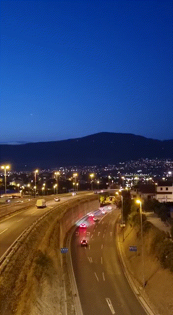

Prije sastavljanja čitavog videa sam napravila cinemagraf
Uz cinemagraf sam dodala jos tri videa, koje sam pomoću tranzicija, texta i filtera sastavila u jedan.
Na početku i na kraju videa sam stavila fade in i fade out efekt, a između videa možemo pronaći tranzicije poput ubrzavanja, zumiranja, dodavanja raznih prijelaza i slično.